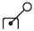
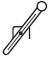
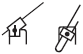
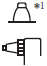
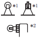
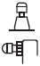
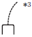
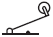
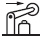

Building Automation
Industrial Automation
Power Automation & Safety


Bangladesh Distributor
Limit Switches
Limit Switch are basic switches that have been encased to protect them from external forces, water, oil, and dirt. Many models are available, such as those resistant to head, cold, or corrosion, as well as high-precision models.
|
|
Features |
| Principles | Classifications |
| Engineering Data | Further Information |
|
|
|
Limit Switch Actuator Type and Selection Methods
| Appearance | Type | Pre- travel (PT) | Over- travel (OT) | Oper- ating force (OF) | Repeat accuracy | Shock and vibration re- sistance | Description |
 | Roller lever | Small to large | Large | Medium | ★★★/ ★★ | ★★★ | The stroke in the operating direction is as large as 45° to 90°, the actual angle of which varies with the model. The lever can be set in any angle. Highly sensitive models with small PT values and wide angle models with large OT values are available. These models are applied to a wide range of applications including object positioning and detection. |
 | Adjustable roller lever | Small to large | Large | Medium | ★★★/ ★★ | ★★ | Dogs are detected roughly by making use of the characteristics of the roller lever. The length of the lever is adjustable. (Countermeasures against lever shaking*4 may be required.) |
 | Adjustable rod lever | Large | Large | Medium | ★★ | ★★ | This lever is convenient when the dogs are wide or not uniform in size. The OF required by this lever is smaller than that of any other rotating actuator used for Limit Switches. The length of the rod is adjustable and the rod itself can be bent easily. (Countermeasures against lever shaking*4 may be required.) |
 | Fork lever lock | Large | Medium | Medium | ★★ | ★★★ | The lever turns by itself when it is operated to an angle of 55°and the lever keeps its position at an angle of 90°. A single Dog in reciprocating operation can actuate the Limit Switch. Two dogs can be used to actuate two Limit Switches positioned slightly different from each other. |
 | Plunger | Small | Medium | Large | ★★★ | ★★★ | The plunger operated by hydraulic pressure or air cylinder power detects positions highly accurately. The plunger must be installed according to the movement of the dog so that an incorrect load will not be imposed on the plunger. |
 | Roller plunger | Small | Medium | Large | ★★★ | ★★★ | The roller plunger can be operated in a wide range by employing a cam, Dog, cylinder, or auxiliary actuator. Position detection accuracy is high. |
 | Ball plunger | Small | Medium | Large | ★★ | ★★★ | The tip of the plunger is made of a steel ball, which can be operated in any direction with no limitations. The ball plunger is convenient when the mounting side is not aligned with the movement direction of the Dog or the Limit Switch is actuated by two dogs in X and Y directions. |
 | Bevel plunger | Small | Medium | Large | ★★★ | ★★★ | Unlike roller plungers, the bevel plunger protects the actuator from abrasion. The bevel plunger is a hardened plunger with an edge angle of 120° that ensures high accuracy and a long life. The bevel plunger is mainly applied to multiple Limit Switches for multi-level control of machining equipment. |
 | Coil spring | Medium | Large | Small | ★ | ★ | The coil spring can be operated in any direction except the axis direction. The OF required by the coil spring is smaller than any other actuator used for Limit Switches. The use of the coil spring is ideal for the detection of dogs that are not uniform in size or direction. The OT is absorbed by the actuator, thus permitting variations in the dog position. |
| Hinge lever | Large | Medium | Small | ★ | ★ | The hinge lever is used with low-speed, low-torque cams. The lever can be varied in a variety of shapes according to the Dog. | |
 | Hinge roller lever | Large | Medium | Small | ★ | ★ | This lever consists of a hinge lever with a roller and suitable for a high-speed cam. (The operating speed must be within the permissible rate.) |
 | Roller arm lever | Medium | Medium | Medium | ★ | ★ | The roller position can be changed. |
Note:Indications for repeat accuracy and shock and vibration resistance are as follows: ★: OK, ★★: Good, ★★★: Excellent, ★★★★: Superior
*1.Panel-mounting models are available (D4E-[]N, SHL, ZC-[]55, and D4MC).
*2.Horizontal roller models are available (D4A-[]N).
*3.Steel wire modes are available (WL). Plastic rod or wire rod models are available (D4C, D4CC, HL-5000, and D4A-[]N).
*4.Lever shaking may cause the actuator to bounce after being actuated and to move to the operating position on the opposite side. This may result in a failure of the Limit Switch.